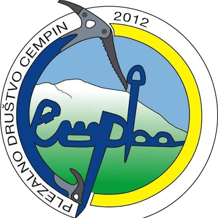

O nas
Plezalno društvo Cempin
Društvo iz Poljanske doline, ustanovljeno leta 2012, ki združuje ljubitelje plezanja in gora.

Naša zgodba
Iz Poljan v stene
Društvo smo ustanovili leta 2012 v Poljanah nad Škofjo Loko, ker smo si želeli prostor, kjer lahko plezanje raste skupaj z ljudmi. Danes povezujemo otroke, mlade in odrasle, ki jih vleče navzgor.
Ime in znak društva, cepin, sta simbol vsega, kar počnemo: od skale in ledu do vrhov.